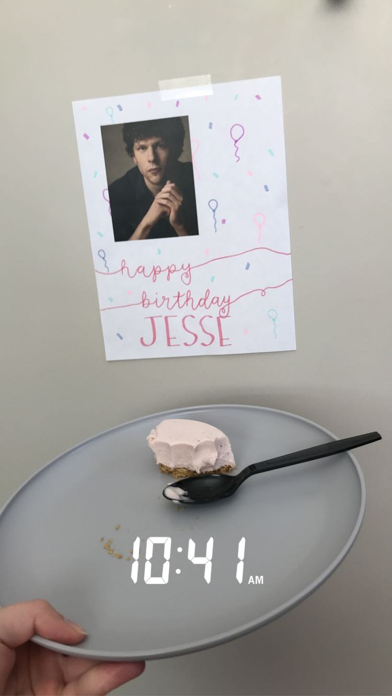

Hi there, my name is Jesse Eisenberg! I am an oscar-nominated actor and have also been in the running for two BAFTA awards, two Golden Globes, and more. I'm most well-known for my roles in the Social Network, Now You See Me, Zombieland, and many others. I was born in Queens, NY, and my birthday is October 5th, 1983.
I am often mistaken for Michael Cera (left).

My 37th birthday was celebrated by two students at the University of Kansas in a dorm room in Self Hall. They ate strawberry cheesecake at 10:00 AM while my favorite song played in the background.
My younger sister used to act as well, starring in old Pepsi commercials and movies How to Eat Fried Worms & Paulie.

I hosted SNL on January 29, 2011. The picture below was taken during my monologue, with Mark Zuckerberg, who I played in The Social Network, along with me (center) and Andy Samberg (right).

Before I was cast to place Mark Zuckerberg in The Social Network, I had never even seen a Facebook page.

I also love music, especially musical theater. I've been playing the drums since I was eight years old, and my favorite band is Ween!